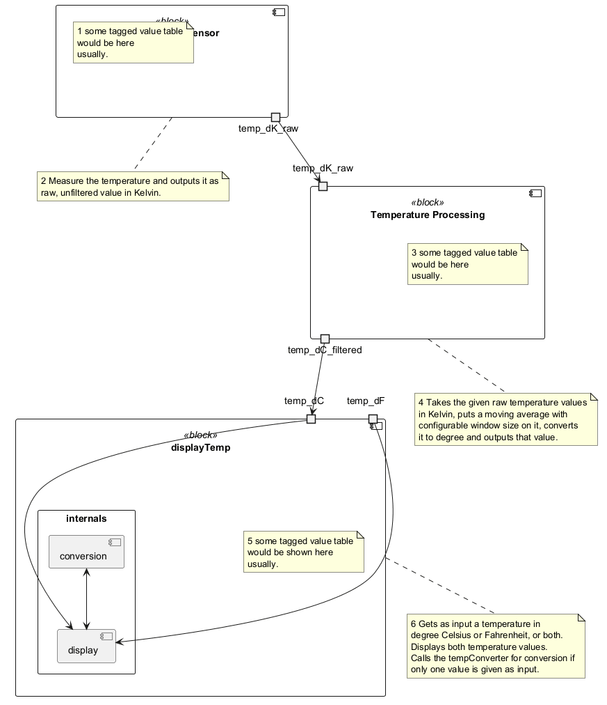

@startuml
!pragma svek_trace on
'left to right direction
component "Temperature Sensor" as tempSensor <<block>> {
note as tempSensor_TVs
1 some tagged value table
would be here
usually.
end note
portout "temp_dK_raw " as tempSensor_temp_dK_raw
}
note bottom of tempSensor
2 Measure the temperature and outputs it as
raw, unfiltered value in Kelvin.
end note
component "Temperature Processing" as tempProcessing <<block>> {
note as tempProcessing_TVs
3 some tagged value table
would be here
usually.
end note
portin "temp_dK_raw" as tempProcessing_temp_dK_raw_in
portout "temp_dC_filtered" as tempProcessing_temp_dC_filtered_out
}
note bottom of tempProcessing
4 Takes the given raw temperature values
in Kelvin, puts a moving average with
configurable window size on it, converts
it to degree and outputs that value.
end note
component "displayTemp" as displayTemp <<block>> {
portin "temp_dC " as temp_dC_displayTemp
portin "temp_dF " as temp_dF_displayTemp
note as displayTemp_TVs
5 some tagged value table
would be shown here
usually.
end note
rectangle "internals" {
component display
component conversion
temp_dC_displayTemp -u-> display
temp_dF_displayTemp --> display
conversion <--> display
}
}
note bottom of displayTemp
6 Gets as input a temperature in
degree Celsius or Fahrenheit, or both.
Displays both temperature values.
Calls the tempConverter for conversion if
only one value is given as input.
end note
tempSensor_temp_dK_raw --> tempProcessing_temp_dK_raw_in
tempProcessing_temp_dC_filtered_out --> temp_dC_displayTemp
@enduml